Diem — Google Play 배포 실행 기록
실제 화면으로 남긴
첫 출시의 순서
1호 앱 Diem을 Google Play에 올리는 전 과정을, 진행하면서 찍은 실제 콘솔 화면과 함께 순서대로 기록합니다. 다음 앱(Penna)은 이 문서를 따라가기만 하면 됩니다. 계정·앱 식별번호와 개인 주소는 가렸습니다.
2026-08-12 ~ 진행 중 · Diem v1.2.0 · 조직 계정(Vravio Inc)
- 전체 단계
- 8
- 완료
- 5
- 실측 캡처
- 13 장
- 계정 유형
- 조직 (테스트 의무 면제)
- 업로드 파일
- AAB 13.1 MB
- 심사 예상
- 3–7 일
0. 게시 전 준비 완료
콘솔에 들어가기 전에 끝내둔 것
- 개발자 계정 — 조직 계정 신원·전화번호 인증. 조직 계정은 개인 계정에 부과되는 "테스터 12명×14일" 의무가 없어 내부 테스트 후 바로 프로덕션 신청이 가능합니다
- 개인정보처리방침 호스팅 — 자리표시자를 실제 값으로 교체해 GitHub Pages에 게시. 심사자가 실제로 열어보므로 URL이 살아 있어야 합니다
- 스토어 자산 — 문구(영/한 각 3종), 아이콘 512, 피처 그래픽 1024×500, 스크린샷 8장
- 서명된 AAB — 릴리스 빌드 + 서명 검증(jar verified)
1. 앱 만들기 완료
홈 → 앱 만들기 · 여기서 정한 값은 대부분 되돌릴 수 없다
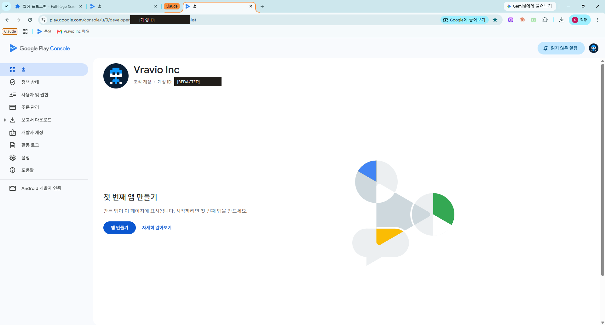
시작점 — 인증이 끝나면 "첫 번째 앱 만들기"가 활성화된다
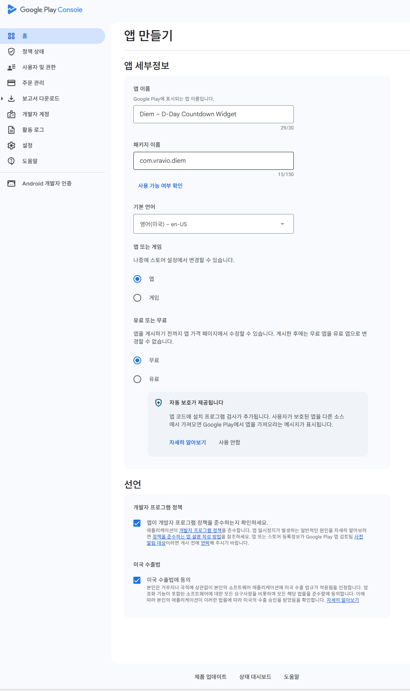
앱 세부정보 폼 — 이름·패키지·기본 언어·무료 선언. 무료→유료 전환은 영구 불가, 패키지 이름은 생성 후 변경 불가
문서에 없던 실측 발견. 앱 만들기 폼에 패키지 이름 입력란이 있습니다 — 과거에는 첫 번들 업로드 시점에 확정되던 값입니다. 준비해둔 가이드에 이 필드가 없어 실측 후 가이드를 고쳤습니다. 화면이 문서보다 항상 옳습니다.
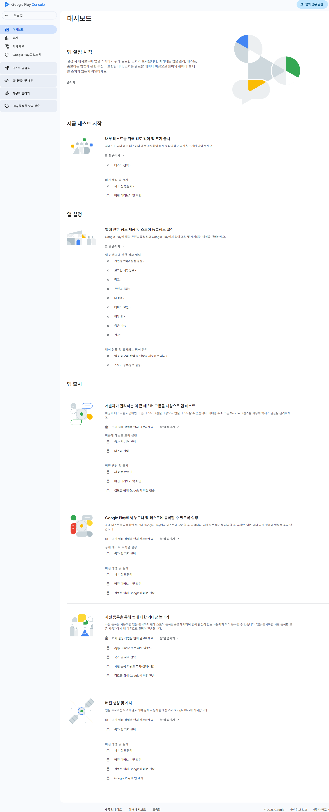
생성 직후 대시보드 — "앱 설정" 체크리스트가 열린다
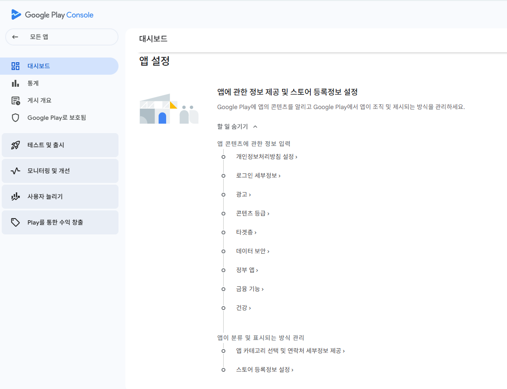
앱 설정 체크리스트 확대 — 이 목록이 2단계의 지도다
2. 앱 콘텐츠 선언 완료
정책 및 프로그램 → 앱 콘텐츠 · 심사 제출의 관문, 전부 수동 입력
12개 항목을 위에서 아래로. Diem의 답은 대부분 "아니요"지만(무광고·무수집·무로그인), 선언은 빌드 실제와 일치해야 합니다 — 광고 없다고 선언하고 광고 SDK가 들어 있으면 반려됩니다.
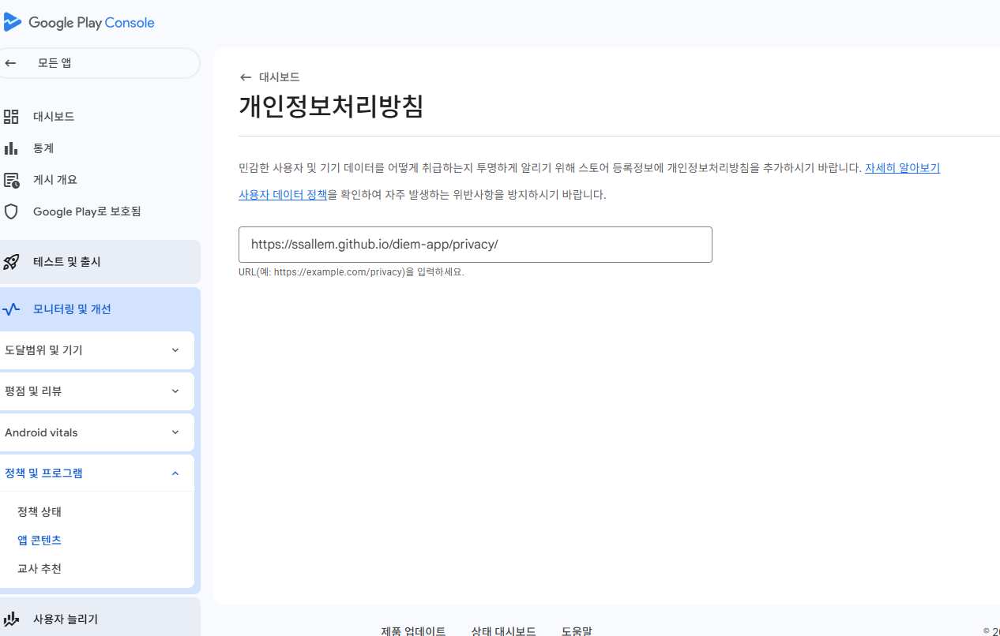
개인정보처리방침 — 호스팅해둔 URL 입력
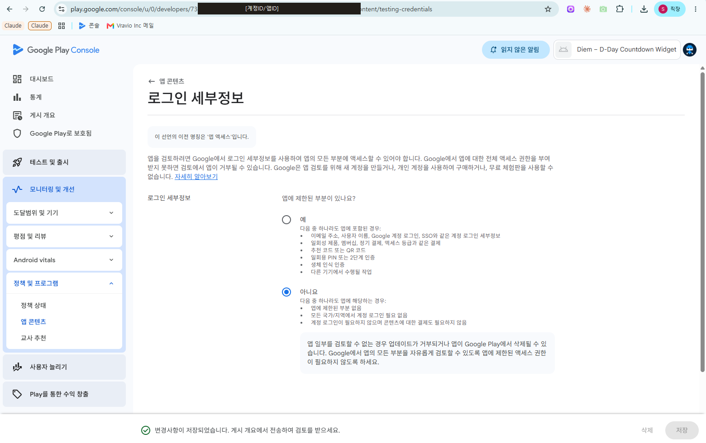
로그인 세부정보 — "아니요(제한 없음)". 저장 토스트까지 확인
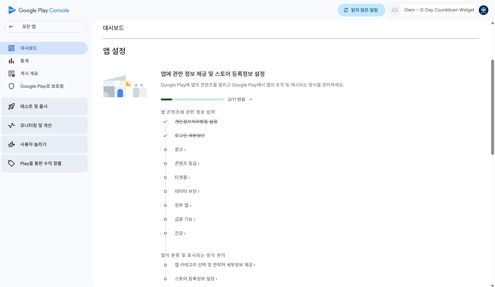
저장할 때마다 대시보드 진행률이 올라간다 (2/11)
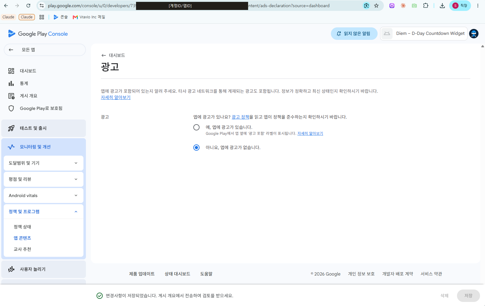
광고 — "아니요". 1차 출시 빌드는 광고 SDK 권한까지 제거된 상태라 선언과 실제가 일치
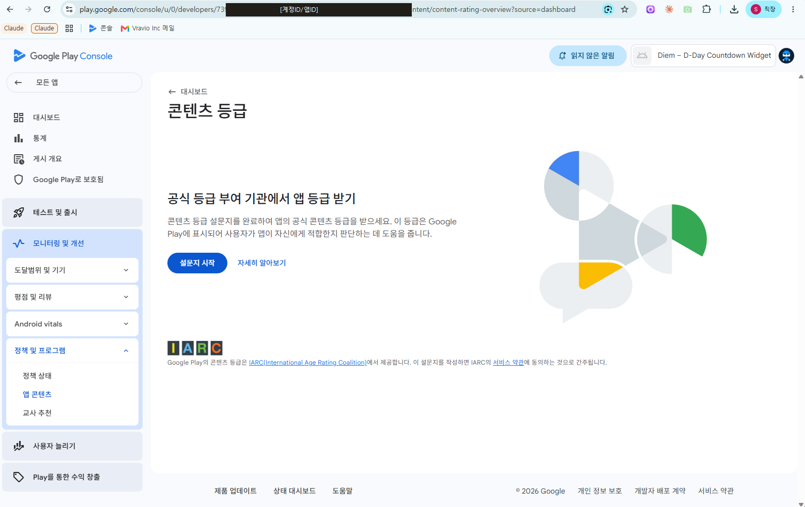
콘텐츠 등급 — IARC 설문 시작
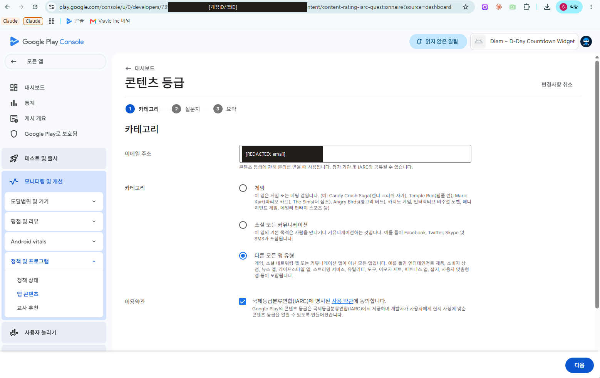
설문 1단계 — 이메일·카테고리("다른 모든 앱 유형"). 문항은 전부 "아니요" → 전체이용가
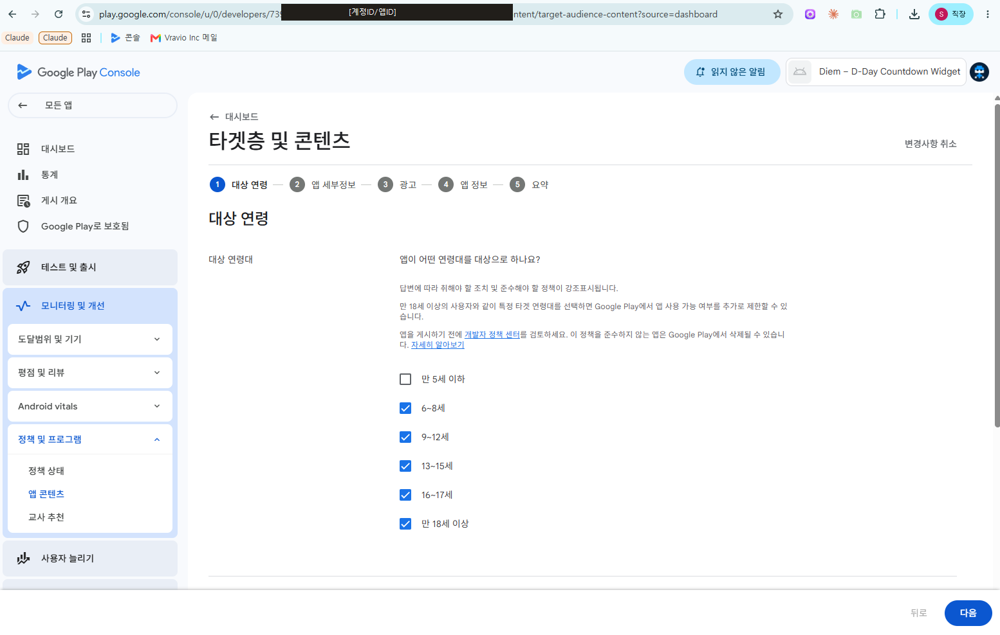
타겟층 — 잘못 입력된 상태의 기록. 전 연령이 체크돼 있는데, 12세 이하를 포함하면 가족 정책 심사가 통째로 붙는다. "만 18세 이상"만 남기고 해제했다
이 단계에서 나온 실수 두 가지 — 다음 앱에서 반복하지 말 것. ① 타겟 연령을 전부 체크(위 캡처). ② 등급 설문 이메일에 개인 주소 입력 — 회사 공개 주소로 통일해야 합니다. 둘 다 제출 전에 잡았습니다.
3. 스토어 등록정보 완료
사용자 늘리기 → 앱 정보 → 스토어 등록정보
- 영어(기본) — 제목 29/30자 · 짧은 설명 73/80 · 자세한 설명 2,185/4,000. 글자수는 입력 전에 전부 실측해뒀다
- 그래픽 — 아이콘·피처 그래픽·스크린샷 8장, 파일명 번호 순서대로 업로드
- 한국어 — 번역 추가로 등록. "AI로 번역 가져오기"는 쓰지 않았다 — 준비한 문구가 검색 키워드를 반영한다
4. Play 앱 서명 첫 업로드 시 자동
첫 AAB 업로드 때 자동 등록됩니다. 이후 앱 서명 키는 Google이 보관하고, 개발자는 업로드 키만 관리합니다. 업로드 키를 잃어도 재설정 가능해지는 시점이라, 첫 업로드 전 키 보관이 가장 위험한 구간입니다.
5. 내부 테스트 진행 예정
테스트 및 출시 → 테스트 → 내부 테스트 · 심사 없이 즉시 배포
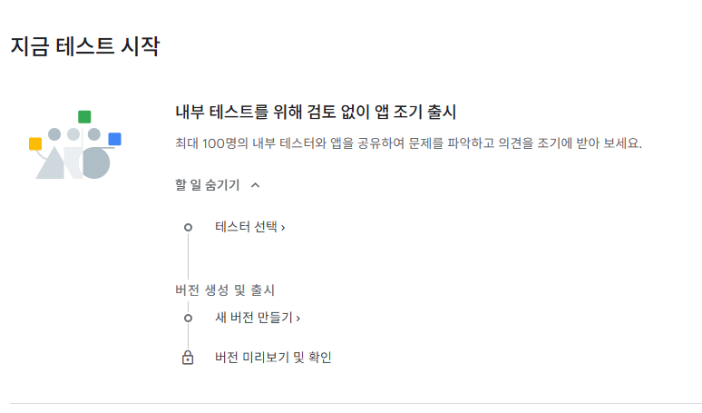
대시보드가 내부 테스트를 가장 위에 권한다 — 검토 없이 조기 배포 가능한 유일한 트랙
- 테스터 이메일 목록 → AAB 업로드 → 릴리스 노트 → 출시
- 참여 링크(옵트인 URL)로 실기기 설치 → 위젯·언어·다크모드 5분 점검
6. 프로덕션 진행 예정
- 국가 선택 — EEA 30국·영국·스위스 제외(광고 도입 대비 GDPR 동의폼 미구현). 최초 1회만 수동, 이후 상속
- 동일 AAB 승격 — 내부 테스트에 올린 바이너리를 라이브러리에서 선택. 재빌드 금지
- 심사 제출 → 상태 "검토 중"
7. 심사 대기 예정
- 신규 앱 통상 3~7일. 대기 중 새 버전 제출 금지
- 통과 후 30분 내: 스토어 검색·설치·스크린샷 표시 확인
이 기록이 남기는 것
- 다음 앱의 대본 — Penna는 이 순서에서 앱 이름·값만 바꾸면 된다. 광고가 켜진 앱이라 2단계의 광고·데이터 보안 답만 반대가 된다
- 자동화의 설계도 — 3·5·6단계는 API로 자동화 가능(두 번째 릴리스부터), 1·2·7단계는 영구 수동. 어디에 시간이 드는지 이 기록이 증거다
- 실패 분기의 실물 — 잘못 입력된 화면도 지우지 않고 남겼다. 정상 경로는 문서로 알 수 있지만 실수는 실물이 있어야 안다